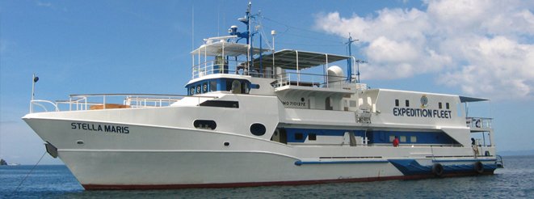
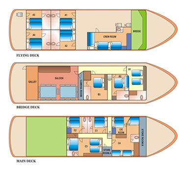
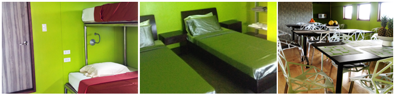
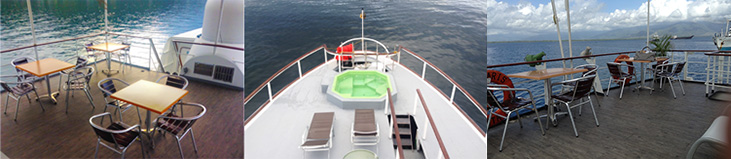

Stella Maris Explorer
The M/Y Stella Maris Explorer is a spacious 36 meter twin screw, full service dive cruiser. This boat is one of the fleet’s pleasure yachts, as it has a spacious open-air top deck – perfect for enjoying your sundowner while watching the sunset!

- Fully air-conditioned and carpeted interiors
- 10 twin-sharing cabins w/ ensuite toilet and bath
- Hot and cold shower
- 4 open rinse showers on deck
- Entertainment center with TV, DVD and stereo
- Lounge
- Library of books, magazines and DVDs
- 20sqm sundeck bar area
- Jacuzzi
Boat Specification

Gross Tonnage/ Weight: 275.93
LOA: 31.08
Breadth: 7.4
Draft: 3.4
Main Engine: MTU
Year Built: 1986
Cruising Speed: 8-10 knots
Hull: Aluminum
Generators: 2 x Isuzu 60 KVA
1 x Kobota 10 KVA
Water Maker: 5 tons per day
Water Capacity: 18 tons
Electricity: 220/110V-60htz
Minimum Capacity: 12 guests ( Sure Sail )
Maximum Capacity: 20 guests

Cabins
3 Deluxe, 4 Standard, 3 C-Deck

Note: The new pictures with new mattresses and bed linens (memory foam and orthopedic mattress).
Safety Equipment, Navigation & Communication
- First Aid DAN Kit
- Solas Compliant
- GMDSS,EPIRB
- SSB Radio
- SART Marine VHF
- Weather Fax
- Radar
- Standard VHF portable radio and Icon base radio
- Eco Sounder
- Portable GPS
- Immarsat Worldwide Telephone Communication System
- 2 x 20 inflatable life raft
Scuba Diving Equipment
- 3 Bauer K15 compressors
- Aluminum tanks
- Regulators
- BCDs
- Weight belts
- Weights and dive lights
- Nitrox Membrane System
- 2 x 27 footer chase boats
More Pictures From Stella Maris Explorer
